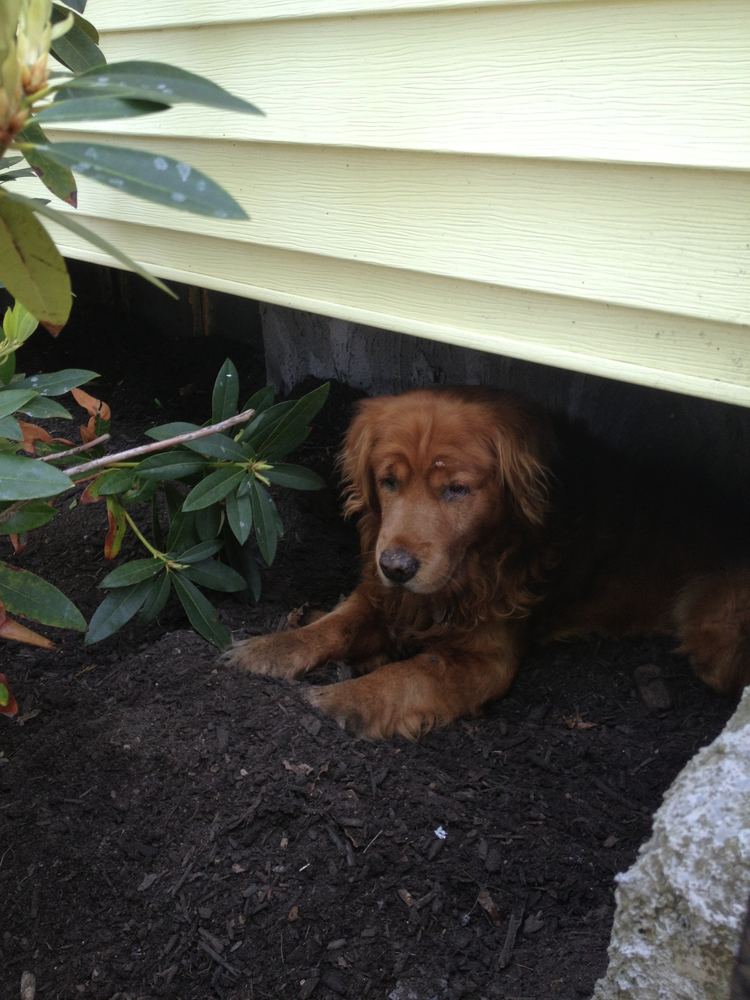
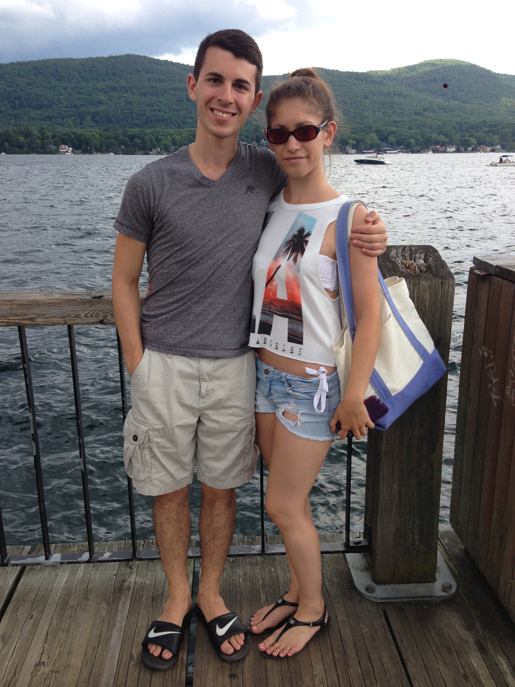
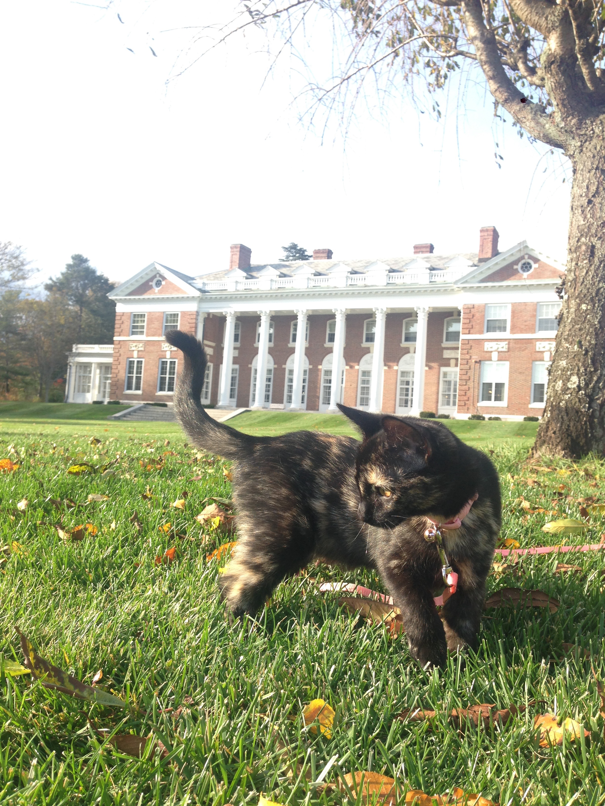
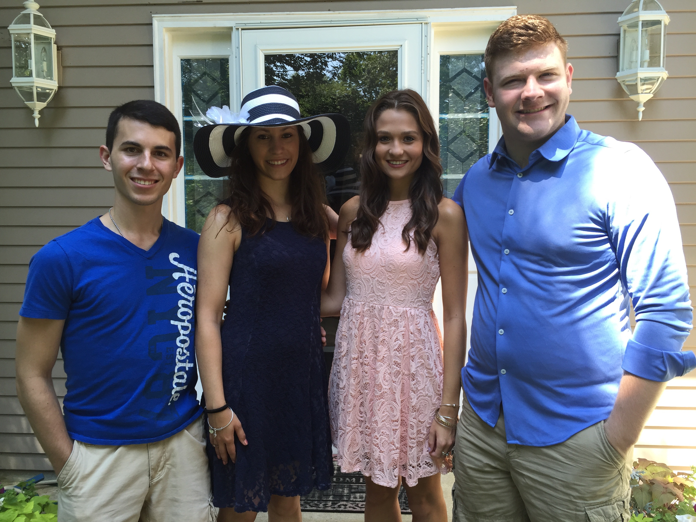
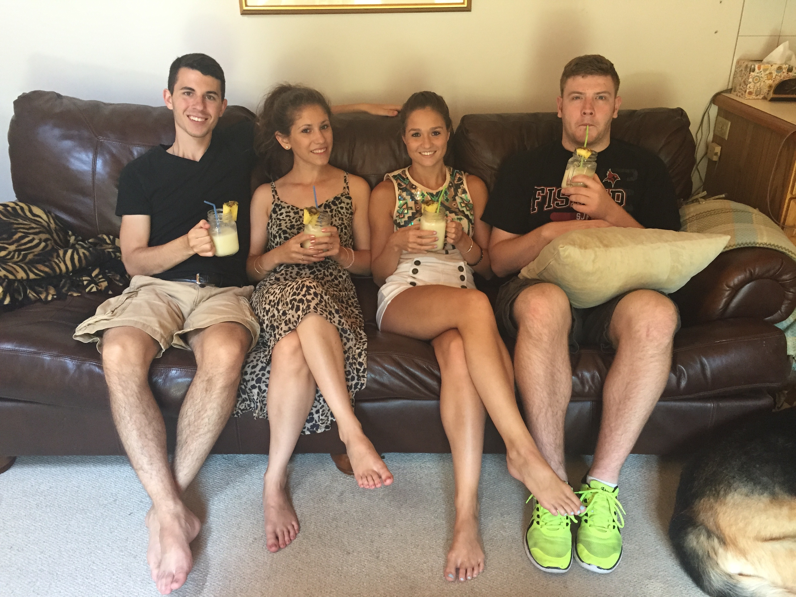
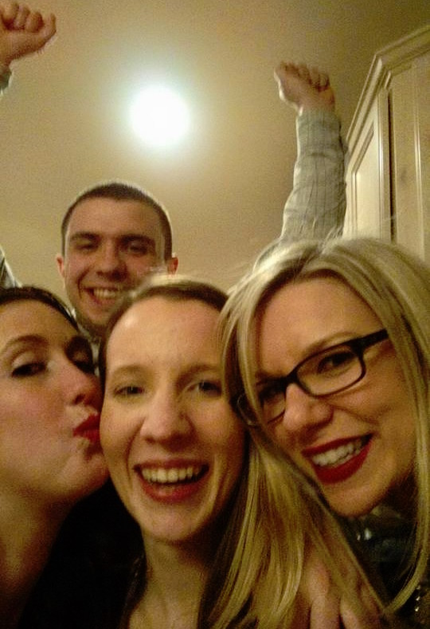

Friends
Here I thought I'd share with you all some pictures of my close friends and talk about the awesome experiences I've had with them. No one wants to go through life alone, right?
Clancy

The first pictures I thought I'd show was of my golden retriever, Clancy. I had him for about 13 or 14 years, sometimes I lose count. He was best dog in the world. He'd sleep in my room, next to my bed every night. And if I shut the door before bed, he'd push it open with his head and come sleep next to me. He was friendly, loving, and playful. Anyway, he lived until the beginning of my freshman year at school, so he's only with me in memory. I do plan on getting another golden in the future and naming it Clancy Jr. or Clancy II, which will be so cool!
Sera & Callie
 This is my lovely girlfriend Sera! We met during Freshman orientation on June 24, 2013. A few weeks later I visited her in upstate NY, and things just clicked. Fast forward to August of that year and we've ben together ever since. I have Stonehill to thank for meeting such an amazing person, and I'd never forget that night. So you might be asking yourself: why is there a cat pic? Well, that's her (our) cat Callie. Her color is technically tortoise shell, and she's something else. She has such a personality and likes to be pretty vocal. Anyway, I love these two girls.
Squad
 This is the squad (kind of, it's a little bit of a joke!). From left to right, we have: Me, Sera, Steph, and Matt. I met Sera before even entering Stonehill, and Steph is Sera's roommate, so naturally we became friends. And through them, I met Matt, who I now room with and study CS with. I appreciate each one of these dinks for being such great friends. I couldn't ask for a better group of people.
Dan
See that guy in the background making a fool out of himself (just kidding Dan!)? Yea, that's Dan the man. If you read the About Me page, you might remember when I talked about growing up with my brothers and my neighbors. Dan was one of those neighbors, and I've known him since I was a kid. To be honest, I don't really know how long, because I don't have many memories of living in my house before Dan moved in next door. Anyway, he's a really great guy. If I had to list anyone as a close friend that I trust with anything, it's Dan. By the way, that's his girlfriend in the middle!